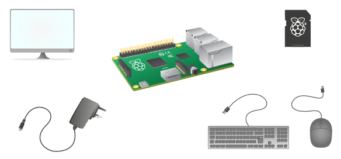
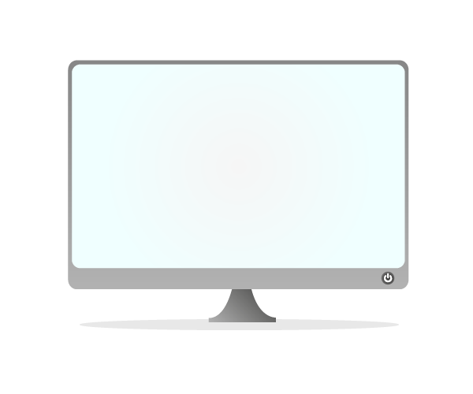
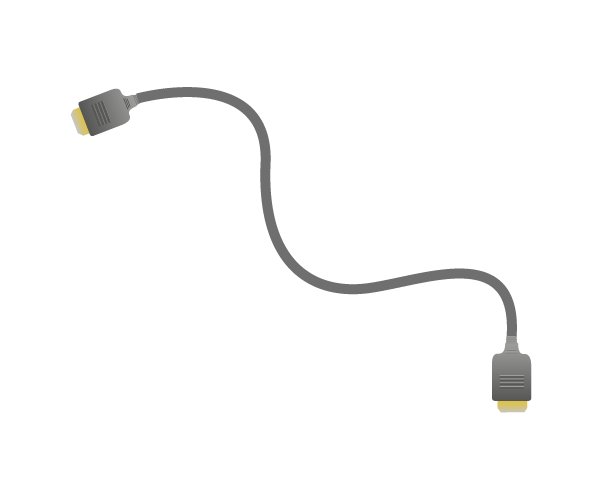
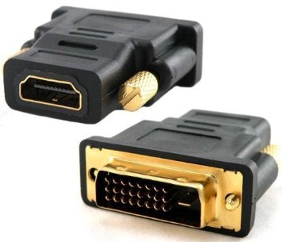
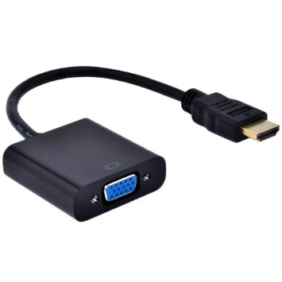
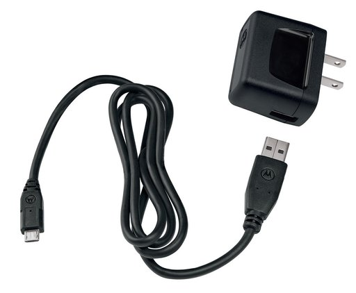
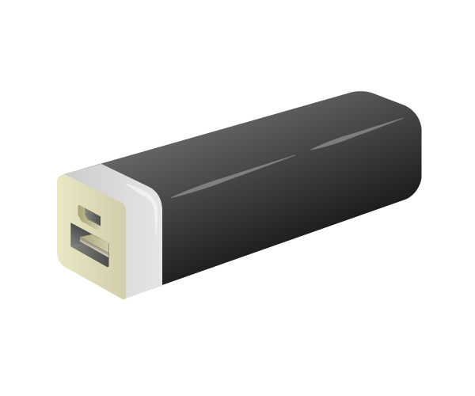
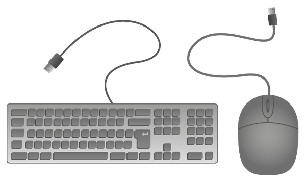
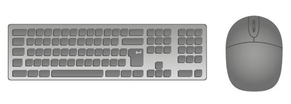
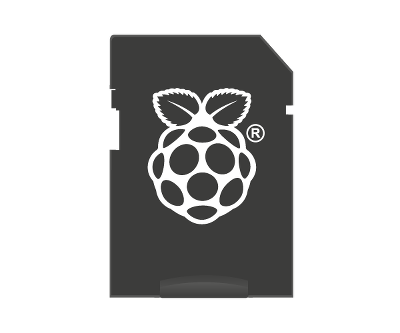

Licenca
To delo je na voljo pod pogoji slovenske licence Creative Commons 2.5:
priznanje avtorstva - nekomercialno - deljenje pod enakimi pogoji.
Celotna licenca je na voljo na spletu na naslovu http://creativecommons.org/licenses/by-nc-sa/2.5/si/. V skladu s to licenco je dovoljeno vsakemu uporabniku delo razmnoževati, distribuirati, javno priobčevati, dajati v najem in tudi predelovati, vendar samo v nekomercialne namene in ob pogoju, da navede avtorja oziroma avtorje in izdajatelja tega dela. Če uporabnik delo predela, kar pomeni, da ga spremeni, preoblikuje, prevede ali uporabi to delo v svojem delu, lahko predelavo dela ponudi na voljo le pod pogoji, ki so enaki pogojem iz te licence oziroma pod enako licenco.

Potrebna oprema
Preden karkoli priključiš na svojo Malino, se prepričaj, da imaš vso potrebno opremo:
- zaslon z ustreznimi kabli in adapterji,
- napajalnik z mikro USB priključkom,
- tipkovnico in miško ali brezžično tipkovnico in miško z Bluetooth adapterjem,
- mikro SD kartico in
- Malino (Raspberry Pi).

Preden lahko začneš uporabljati Malino, potrebuješ še operacijski sistem. Če nimaš mikro USB kartice s prednastavljenim operacijskim sistemom, si lahko v vodiču za namestitev programske opreme ogledaš podrobnosti namestitve operacijskega sistema.
Zaslon
Obstaja več različnih tipov zaslonov, ki jih lahko uporabiš pri delu z Malino:

HDMI
Večina modernih televizij in računalniških zaslonov ima vhod HDMI. To je najlažji način za delo z Malino, saj jo lahko s kablom HDMI neposredno priključiš na televizijo ali računalniški zaslon.

DVI
Nekateri starejši računalniški zasloni imajo vhod DVI. Malino lahko priključiš na računalniški zaslon, vendar potrebuješ adapter HDMI-v-DVI ali pa kabel, ki ima na eni strani priključek HDMI, na drugi pa priključek DVI.

VGA
Nekateri še starejši računalniški zasloni imajo vhod VGA. Malino lahko priključiš na računalniški zaslon, vendar preprost adapter ne bo dovolj, saj potrebuješ pretvornik HDMI-v-VGA, ki bo pretvoril digitalni video signal v analogni video signal.

Napajalnik
Če uporabljaš Malino različice 3, potem je priporočljivo, da uporabiš 5 V / 2,5 A napajalnik. Starejše modele Maline lahko poganjaš s tokom, ki ni nižji od 1,2 A.
Polnilnik mobilnih naprav
Veliko mobilnih naprav za napajanje uporablja 5 V mikro USB polnilnik oziroma napajalnik. Tak napajalnik lahko uporabimo tudi za Malino, vendar je dobro preveriti, da zagotavlja dovolj napetosti in toka (5 V / 1,2 - 2,5 A)

Mikro USB kabel priključen na drugo napravo
Obstaja veliko naprav, ki lahko zagotavljajo napetost preko vhoda USB. Nekatere sodobne vtičnice imajo na primer vhod USB. Prav tako lahko Malino povežeš z zvezdiščem USB, računalnikom ali s prenosno baterijo. Če imaš mikro USB kabel, lahko poskusiš napajati Malino z uporabo poljubnega vhoda USB.

Tipkovnica in miška
Tipkovnica in miška
Z Malino brez težav deluje katera koli standardna USB tikovnica in miška. Standardne vstavi-in-poženi (angl. plug-and-play) naprave delujejo brez dodatnih gonilnikov. Tipkovnico in miško preprosto vključi v Malino, ki bi ju ob zagonu morala prepoznati.

Brezžična tipkovnica in miška
Brezžične Bluetooth tipkovnice in miške načeloma delujejo z Malino, vendar je uspešnost delovanja odvisna od modela in proizvajalca. Najbolje je v dokumentaciji proizvajalca preveriti, ali je naprava združljiva z Malino.

SD kartica
Najnovejša različica operacijskega sistema Raspbian, ki je priporočljiv operacijski sistem za Malino, zahteva 8 GB (ali večjo) mikro SD kartico. Vse SD kartice niso enake in nekatere imajo višje stopnje neuspeha kot druge. Delovala bo katera koli 8 GB mikro SD kartica, vendar bo na kartico potrebno namestiti operacijski sistem. Postopek namestitve operacijskega sistema si lahko ogledaš v vodiču za namestitev programske opreme.

Malina (Raspberry Pi)
Pri projektih v tem e-učbeniku bomo uporabljali Malino 3, ki je tretja generacija in je nadomestila Malino 2 model B iz februarja 2016. V primerjavi z Malino 2 ima:
- 1,2 GHz 64-bit quad-core ARMv8 CPE
- 802.11n Wireless LAN
- Bluetooth 4.1
- Bluetooth Low Energy (BLE)
Kot Malina 2 pa ima:
- 4 vhode USB
- 40 GPIO nožic oziroma pinov
- vhod Full HDMI
- vhod Ethernet
- kombinirani 3,5 mm avdio priključek in kompozitni video
- Camera interface (CSI)
- Display interface (DSI)
- režo za kartico mikro SD
- grafično jedro VideoCore IV 3D
Malina 3 je enake oblike kot prejšnja Malina 2 (in Malina 1 model B+) ter je popolnoma združljiva z Malinama 1 in 2.